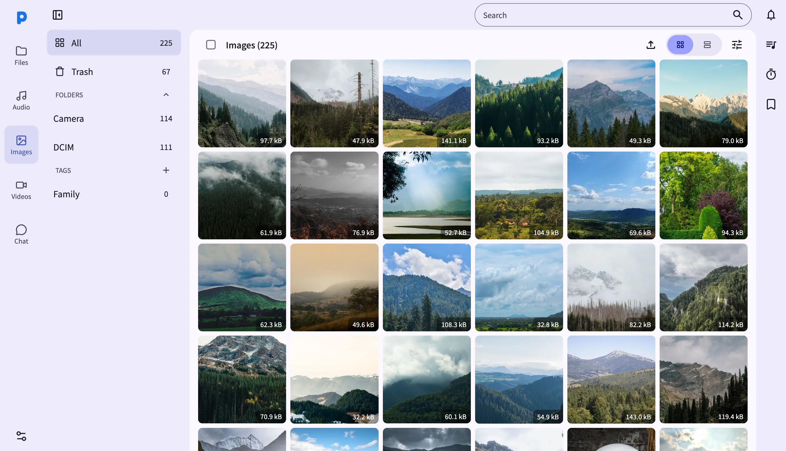
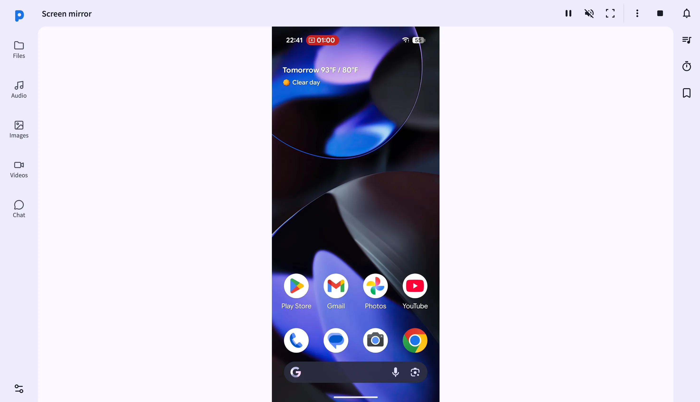

PlainApp 到底值不值得掏钱？——一篇"付费决策账本"
主产品全免费、三条渠道功能各异、副线 PlainCast 单独收费。把定价拆透、分三类人算账、对比替代方案，最后给你一个三秒可执行的结论。
它到底值不值得掏钱？这个问题困扰了我好几天——PlainApp官网上介绍的它是那种"功能堆得很满"的安卓 Web 面板工具，但主产品完全免费，只有一条副线收费。你可能在某个帖子里看到有人说"买了 PlainCast 真香"，也可能有人说"免费版够用啊"。到底谁说的对？我花了一周把定价拆透、把功能边界摸清楚，给你算一笔明明白白的账。

定价拆解：免费版给什么，付费版多什么
先把两套产品的关系说清楚——很多人在这上面懵。
主产品 PlainApp 是完全免费的，没有 Pro 版、没有订阅解锁、没有内购。但它有三条分发渠道，每条的功能完整度不一样，像是一场"不同开发商砍不同部位"的游戏：GitHub下载直装版功能最全（AI 搜图、SMS 镜像、应用管理器、通知镜像一个不缺）；Google Play 版被商店策略阉割了 SMS、应用管理器、通知镜像三项；F-Droid 版又因为 FOSS 标准，把 AI 搜图的 Google 闭源依赖砍掉了。三条渠道全是免费的——但你选哪条，直接决定你免费版能拿到多少。
付费产品叫 PlainCast，是 Google Play 独立上架的副线，只支持 Android 14 及以上。它的核心功能是"平行窗口"：每个手机 App 可以在浏览器大屏上独立开一个窗口，多个 App 可以并排跑，而且手机屏幕可以熄灭继续工作。定价方面——素材里没写精确数字，但这类独立开发者产品我见过不少，单端买断通常在十几块到二十块人民币之间，没有订阅、没有按设备数计费，一次买断终身用。
这里有个挺鸡贼的地方：PlainApp 内置的 DLNA/Chromecast 投屏是免费的，但你如果想要"手机屏幕上某个正在运行的 App 界面实时显示到大屏"（也就是屏幕镜像），免费版只能用 WebRTC + Canvas 的方案，手机屏幕必须常亮；买了 PlainCast 之后，平行窗口能让你把每个 App 独立开一个浏览器窗口、手机可以熄屏继续跑——这相当于把"屏幕镜像"这个需求拆成了两个层级：基础镜像免费给你用、高级平行窗口收费卖。两种方案的技术细节和实现差异在PlainApp文档里写得很清楚。
算账：三类人，各算各的时间账
价格数字摆在那，关键还是得看你用多狠。我把用户分成三档，每一档按"省的时间值不值这笔钱"来算。
轻度用：偶尔传个文件、偶尔投个视频到电视
免费版完全够用，别花钱。
轻度用户的典型场景：手机里存了几个视频想扔给电视看、偶尔用浏览器传几张电脑照片到手机、有时想在电脑上快速翻一下手机里的笔记。这些场景全在免费版覆盖范围内——DLNA 投屏是内置免费功能，视频直接扔给电视解码、手机可以锁屏继续播；文件传输走浏览器 WebDAV 或直接拖拽加密上传，三层加密保证传输安全；笔记同步走浏览器面板，标签、书签、搜索都有。
PlainCast 的平行窗口对你来说就是个噱头——你根本不需要同时开三个手机 App 在浏览器大屏上并排跑。买了也是积灰。
主力用：每天浏览器管手机、媒体库是日常
免费版依然够用，但选对渠道很重要。
主力用户大概是这样的人：每天打开浏览器面板看手机媒体库、AI 搜图找特定照片、用应用管理器批量管理安装包、有时开通知镜像让手机通知在电脑上弹出。这时候你需要的是 GitHub 直装版——Play 版砍的三项（SMS、应用管理器、通知镜像）你可能真用到，F-Droid 版砍的 AI 搜图也是主力场景的高频功能。
免费版能覆盖你 100% 的日常需求。PlainCast 能给你什么？如果你是主力用但不需要平行窗口，那付费版等于零增益。省下这笔钱，把时间花在给照片打标签上（AI 搜图精度在抽象查询上确实一般，手动标签才是主力场景的靠谱方案）。
这里补一个时间账：如果你每天花 5 分钟在浏览器上用 PlainApp 管理手机，一个月就是 2.5 小时。就算 PlainCast 能帮你省掉一半时间（实际不可能），一个月省 1.25 小时——十几块钱买 1.25 小时，算下来一小时十几块。你自己的时间值不值这个价？大多数主力用户会说"还行，但没必要"——因为免费版已经能把流程跑完，只是没那么丝滑。
重度用：多 App 同时开大屏、经常熄屏远程用手机
闭眼买。
重度用户的画像：你需要在浏览器大屏上同时开手机里的 Telegram、浏览器、地图、文件管理器四个 App 并排工作；或者你经常用手机当家庭媒体服务器、想熄屏但继续在浏览器上操作多个 App；再或者你做开发、需要同时看手机日志和浏览器面板和手机 App——这些是 PlainCast 平行窗口的主打场景。
这时候免费版的"屏幕镜像"方案就真的难受了：WebRTC + Canvas 的屏幕镜像带宽占用高、手机必须常亮、只能投整个屏幕不能分 App。PlainCast 解决的是"多 App 独立窗口 + 熄屏"这个痛点，对你来说省的不是"5 分钟变 2 分钟"，而是"根本做不到"变"每天都在做"。
而且买断价十几块，就算你只用来三个月，平均每天一毛多——这账没的算，直接掏。
替代方案：不付这笔钱还有什么路
如果你觉得自己卡在"主力用和重度用之间、还没到闭眼买的程度"，先看看替代方案值不值得先等等。
免费路径一：WebRTC 屏幕镜像凑合着用。 PlainApp 内置的免费屏幕镜像走 WebRTC + WebCodecs + Canvas，能把手机整个屏幕实时投到浏览器上。缺点是手机必须常亮（耗电）、带宽占用比 DLNA 投屏高不少（如果是局域网还好）、只能投整个屏幕不能分 App。但如果你只是偶尔需要在大屏上看手机上某个 App 的界面，忍忍就过去了。
免费路径二：scrcpy + 无线调试。 scrcpy 是安卓开源社区的神器，USB 连接零延迟，无线调试之后也能做到局域网无线投屏。缺点是需要 ADB、需要开开发者选项、需要每台手机配置——技术门槛比 PlainApp 浏览器面板高不少。如果你已经在折腾 ADB 了，scrcpy 免费好用；但你如果只是想"打开浏览器就能用"，scrcpy 的配置成本本身就是个门槛。
付费路径但绕开 PlainCast：AirDroid 或类似工具。 AirDroid 的订阅大概一年百来块，多设备同步、远程控制、通知镜像都有——但它是云端方案，所有数据走 AirDroid 的服务器，和 PlainApp 的"Local First、三层加密、数据不离开设备"完全是两种思路。如果你在意隐私、不想手机数据经过任何第三方服务器，AirDroid 这条路从根上就不对。
还有一个容易混淆的点：PlainApp 内置的 DLNA 投屏是免费的，但它投的是"某个文件"（视频、照片、音频），不是"手机屏幕"。如果你的需求只是"把手机里的视频扔给电视"，那 PlainCast 完全不用考虑——免费版搞定。
结论：三秒对号入座
最后给你一个可执行的对照表，三秒钟找到自己的位置：
- 闭眼买 PlainCast：Android 14+、需要多 App 平行窗口、经常要手机熄屏继续操作、每天用 PlainApp 超过半小时
- 再等等看：主力用但还没到重度、犹豫"这十几块到底值不值"——先用 GitHub 直装版免费跑一周，记录下你最想但免费版做不到的事是什么，如果那件事就是平行窗口，再掏钱包；如果只是嫌"手机屏幕常亮耗电"，去调一下屏幕休眠时间就行
- 永远不用付：轻度用、主力用但不需要平行窗口、用着 F-Droid 版或 Play 版没觉得缺什么——PlainApp 主产品已经把你需要的所有功能免费给了，三条渠道选对一个就行
补充一个小提醒：选渠道的时候别图省事随便装一个。GitHub 直装版功能最全，F-Droid 版最干净但砍了 AI 搜图，Play 版合规但砍了 SMS 和通知——三条路都是免费的，但哪条最适合你，花五分钟查一下各版差异再决定，比装错了再折腾卸载省时间。
加密体系这块顺便提一嘴——PlainApp 的三层加密（TLS + XChaCha20 + Ed25519）是所有版本都有的，这也是我敢把它装在主力机上的原因。浏览器那个"自签名证书警告"看着吓人，实际上应用层的 XChaCha20 加密补了 TLS 证书验证的缺口——抓包就算抓到也是密文，解不开。这个安全属性不额外收费，算是免费版给你的彩蛋。
PlainApp 是个很少见的"主产品完全免费、副线只卖一个特定痛点"的独立产品。定价不鸡贼（买断不订阅）、功能不注水（免费版真够用）、副线定位清晰（只卖给真需要平行窗口的人）。我最终没有付这笔钱——主力用，但还没到重度用的程度。如果你读到这里觉得自己好像是重度用户，那十几块换一个"每天都能让我爽"的功能，怎么看都不亏。这套资料在GitHub、Gitee和GitCode上都有同步仓库，不想上 GitHub 的国内用户直接去后两者就好。
